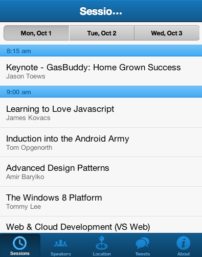
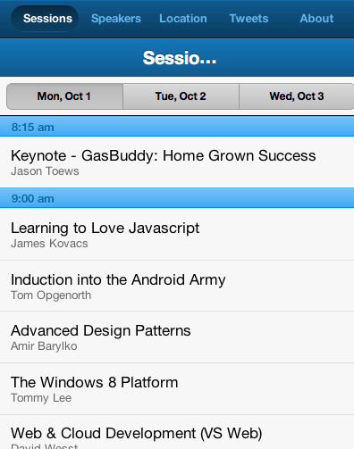
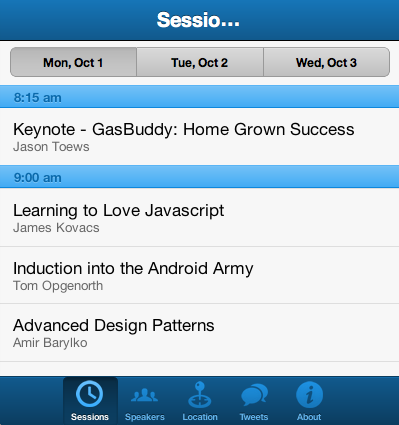
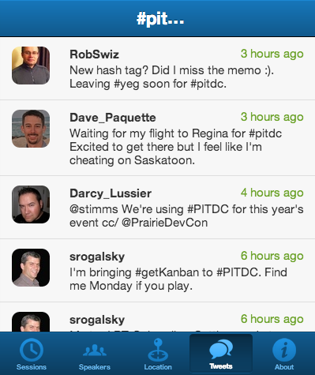

Sencha Touch
Building an HTML5 Mobile App.
What is it?
Sencha Touch 2 is a framework that enables developers to build fast and impressive apps that work on iOS, Android, BlackBerry, Kindle Fire, and more.

Windows Phone?
Not yet, but it's on the road map!
http://www.sencha.com/products/touch/road-map/A little video
Things that make it awesome
- Charting API
- Event driven
- MVC(S)
- Easily themeable via SASS
- Easy to compile for iOS or Android store
- Free!
Things you need to develop
- Modern webkit browser like Safari or Chrome
- A webserver running locally
Let's look at app.js
Ext.application({
name: 'PDC',
views: [
'Main',
],
models: [],
controllers: [],
stores: [],
launch: function(){
Ext.Viewport.add({
xclass: 'PDC.view.Main'
});
}
});
But where is 'Main' located?
Main.js is located in app/view/Main.js
How each class is setup
Inside each of the MVC files, there is a standard way you setup your classes.
Ext.define();
Ext.define()
Ext.define('[AppNamespace].[folder].[FileName]', { gigantic config object });
Views
What are they?
Views are what the user sees. They are made up of a component and can have other child components within them.
How does that look?
view/Main.js
Ext.define('PDC.view.Main', {
extend: 'Ext.tab.Panel',
xtype: 'main',
config: {
tabBar: {
defaults: {
flex: 1,
},
docked: 'bottom'
},
items: [
{
xtype: 'sessions',
title: 'Sessions',
iconCls: 'time'
}
]
}
});
extend
extend: 'Ext.tab.Panel'Extending the parent class
xtype
xtype: 'main'An alias for the component we're defining. The format for this is typically lowercase letters only. Example 'sessiondetails'.
Used for referencing components easily and lazily loading them.
config
config: { ... }Allows you to add specific items and set configuration to build your view.
A config object is standard across all components. You will see this everywhere!
Look at http://docs.sencha.com/touch/2-0/ for an overview of what config options can be passed to that specific component (Ext.tab.Panel).
config: { tabBar: ... }
config: {
tabBar: {
defaults: {
flex: 1,
},
docked: 'bottom'
}
}This tabBar option is specific to the Ext.tab.Panel component and has its own set of options.
tabBar set to docked: 'bottom'
tabBar set to docked: 'top'
config: { tabBar: { defaults: { flex: 1 } } }
Setting flex: 1 means it will stretch the buttons out over the width of the screen. If it wasn't, they would all bunch together.
flex: 0
config: { items: [] }
A way of adding other components within the viewport of the current component.
Models
What are they?
A Model represents some object that your application manages.
For example, one might define a Model for Users, Products, Cars, or any other real-world object that we want to model in the system.
They are defined as singular. Users would be defined as User.
How does that look?
model/Session.js
Ext.define('PDC.model.Session', {
extend: 'Ext.data.Model',
config: {
fields: ['id', 'speaker', ...]
}
});
See any similarities to the view/Main.js file?
- Ext.define
- extend:
- config:
Stores
What are they?
The Store class encapsulates a client side cache of Model objects. Stores load data via a Proxy, and also provide functions for sorting, filtering and querying the model instances contained within it.
How does that look?
store/Sessions.js
Ext.define('PDC.store.Sessions', {
extend: 'Ext.data.Store',
config: {
model: 'PDC.model.Session',
proxy: {
type: 'ajax',
url : 'data/sessions.json',
reader: {
type: 'json'
}
},
autoLoad: true
}
});See any similarities to the view/Main.js file?
- Ext.define
- extend:
- config:
How do we fetch them for use?
To get access to an instance of a store, simply call.
Ext.getStore('Sessions');Controllers
What are they?
Controllers are responsible for responding to events that occur within your app.
It allows the View classes to handle the display of data and the Model classes to handle the loading and saving of data - the Controller is the glue that binds them together.
How does that look?
controller/Sessions.js
Ext.define('PDC.controller.Sessions', {
extend: 'Ext.app.Controller',
config: {
refs: {
main: 'main'
},
control: {
segmentedbutton: {
toggle: 'switchSessionDate'
}
}
},
switchSessionDate: function(segment, button_clicked){
console.log('OMG we just clicked on the date button bar for switching session dates!');
console.log(this.getMain()); // gives us to the main view component (view/Main.js)
});
});Types of view components
Ext.tab.Panel
Tab Panels are a great way to allow the user to switch between several pages that are all full screen.
Each Component in the Tab Panel gets its own Tab, which shows the Component when tapped on. Tabs can be positioned at the top or the bottom of the Tab Panel, and can optionally accept title and icon configurations.
Ext.Container
A Container has all of the abilities of Component, but lets you nest other Components inside it.
Applications are made up of lots of components, usually nested inside one another. Containers allow you to render and arrange child Components inside them. Most apps have a single top-level Container called a Viewport, which takes up the entire screen.
Ext.NavigationView
NavigationView is basically a Ext.Container with a card layout, so only one view can be visible at a time.
However, NavigationView also adds extra functionality on top of this to allow you to push and pop views at any time. When you do this, your NavigationView will automatically animate between your current active view, and the new view you want to push, or the previous view you want to pop.
Styling
Sencha Touch uses Compass
An open-source CSS authoring framework.
Compass uses SASS/SCSS
Sass/scss is an extension of CSS3 which adds nested rules, variables, mixins, selector inheritance, and more. Sass generates well formatted CSS and makes your stylesheets easier to organize and maintain.
Nested rules
Before
nav ul li {
float: left;
}
nav ul li a {
display: block;
color: blue;
}
nav ul li a:hover {
color: green;
}
After
nav ul li {
float: left;
a {
display: block;
color: blue;
&:hover {
color: green;
}
}
}
Built-in Mixins
Before
#banner {
background-color: #444444;
background-image: -webkit-gradient(linear, left top, left bottom, from(#444444), to(#999999));
background-image: -webkit-linear-gradient(top, #444444, #999999);
background-image: -moz-linear-gradient(top, #444444, #999999);
background-image: -o-linear-gradient(top, #444444, #999999);
background-image: linear-gradient(to bottom, #444444, #999999);
}
After
@import "compass/css3/images"
#banner {
@include background(linear-gradient(top left, #444444, #999999));
}
Custom Mixins
Before
.content {
border-radius: 5px;
border: 10px solid red;
padding: 10px;
}
.side-content {
border-radius: 5px;
border: 10px solid red;
padding: 10px;
}
.bottom-content {
border-radius: 5px;
border: 10px solid red;
padding: 10px;
}
After
@mixin red-border-content {
border-radius: 5px;
border: 10px solid red;
padding: 10px;
}
.content,
.side-content,
.bottom-content {
@include red-border-content();
}
Variables
Before
.content {
color: #00ff00;
background: #ee1100;
},
.thing {
border: 1px solid #00ff00;
color: #ee1100;
}
p.green-textshadow {
text-shadow: 1px 1px 0 #00ff00;
border: 5px solid #ee1100;
}
After
$green: #00ff00
$red: #ee1100
.content {
color: $green;
background: $red;
},
.thing {
border: 1px solid $green;
color: $red
}
p.green-textshadow {
text-shadow: 1px 1px 0 $green;
border: 5px solid $red;
}
How Sencha works with Compass
Sencha has default styles. Defaults to Titan blue.
Default style
$base-color: #546346;
Now refresh.